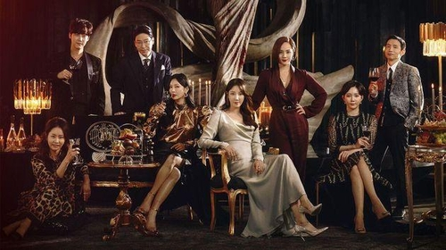

- 등장인물 소개
- 줄거리
- 하이라이트
하이라이트

한국 지상파 드라마 최초로 유기적인 시즌제[1]를 도입해 총 3개의 시즌으로 방송될 예정이다. 시즌 1은 월화 드라마, 시즌 2는 금토 드라마, 시즌 3는 금요 드라마로 방영된다.
서울특별시 송파구 위례동에 위치한 택지지구. 근데 언제부턴가 천수동이라고 이름이 바뀌어 있다.[4]
2022년 대한민국 국토교통부가 재개발 지역으로 지정한 곳이였다. 드라마 내에서는 서울특별시 송파구로 나오고, 실제 위치 자체는 위례동으로 보인다. 그런데 사실 재개발대상은 천수지구가 아니라 오풍지구 였다고 한다. 실은 천수지구는 본래 재개발 지역이 아니라 쓰레기 매립지로 지정되었었다. 나애교를 도와주려고 집권여당인 행복미래당 대표인 정두만이 힘을 쓴것. 헤라팰리스 사람들을 한번에 나락으로 보내 버리려는 계략으로 로건 리와 오윤희가 힘을 합해서 정보를 미리 흘렸고, 고상아, 이규진, 왕미자(이규진 모친) 등 이규진 일가와 강마리, 해영그룹 회장 송이수 등 큰 손들이 다수 투자했다. 결과적으로 이규진일가와 다수의 투기자들이 국립호텔로 간것으로 추정된다.[5]
천수지구 한가운데는 심수련의 가구점 본사가 있으며, 이땅에 주단태 빌리지에 일원인 고층 주상복합이 들어설 예정이 였지만, 그 땅을 나애교가 뒷통수 쳐서 땅을 팔아먹고 튀었다. 그리고 그 나애교의 진짜 정체는....
하지만 결국 시즌2 마지막을 기준으로 정두만이 자수하고, 천수지구 신도시 지정이 취소되었다
배로나(김현수)
2004년 4월 8일[3] or 18일[4]19세[5]